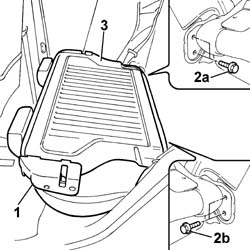

7050A19 rear seat squab - r r
- Path
- Procedures > 70 FITTINGS > 7050 REAR SEATS > 7050A rear seat assembly > 7050A19 rear seat squab - r r
- Kind
- repair procedure (removal / refitting; the operation number is the code)
- Applies to
- all engines; all production periods
- Interactive page
- https://sloeber94.github.io/elrnDB-fPnd/en/#/2753265
Applies to: all engines; all production periods
 Removing
Removing
 Refitting
Refitting1. Lower the backres using the attachment device levers.
2. Working via the luggage compartment, undo the bolts fixing the backrest to the wheel arch.
3. Remove the rear seat backrest.

Applies to: all engines; all production periods
Refitting
RemovingPosition the rear seat backrest and tighten the fixing bolts to the recommended torque.
 | Fastening | Component | Ø | Value (daNm) |
|---|---|---|---|---|
- | Bolt | REAR SEAT BACKREST. | M10 x 1.25 | 4.0 |
Raise the backrest and check that the attachment device is secured to the striker.
Topics that link to this page (7)
- 5505A90 rear wiring bundle - r r or replace
- 5505C26 bonnet wiring - r r
- 7040B06 side trim (one) lh or rh, load compartment/load platform - r r
- 7040L10 cabin floor carpet - r r
- 7050A39 JOINT/HINGES of a squab, left or right, of split rear seat - R.R .
- 7050A54 rear seat squab ribbing - r + r
- 7050D30 Rear seat BACKREST COVER - R.R.